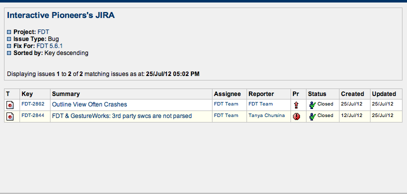
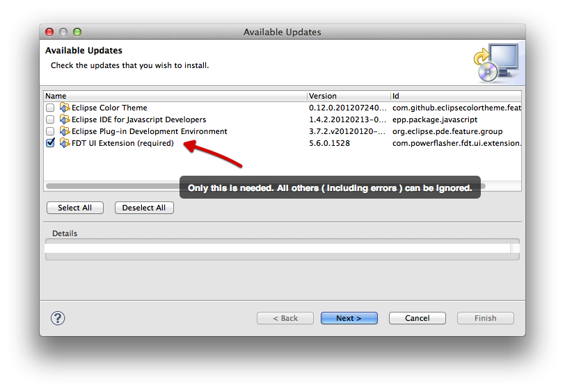

FDT 5.6.1 Released - A Maintenance Release For 5.6
We found two small bugs with FDT 5.6 and we've fixed it. While very few customers would have experienced them, we decided to issue a fix for these issues anyway.
Release Notes

Updating

When updating FDT, you may encoutner other Eclipse plugins that also ask for an update - some may even show up as errors. To be safe, stick to just updating FDT. This is what we've primarily testied against and it works correctly.